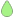

台风相似分析
防汛防台专题
专题综合查询
主菜单
×
台风相似分析
防汛防台专题
简介
水情
雨情
气象
照片
增水
路径
分区降雨量(mm)
导出
面雨量过程(mm)
雨量前十站
导出
潮位过程(m)
吴淞口
吴淞口
高桥
芦潮港
米市渡
黄浦公园
金山嘴
预报台
中国
中国香港
日本
中国台湾
美国
台风等级
热带低压
热带风暴
强热带风暴
台风
强台风
超强台风
无雨

0-10
10-25
25-50
50-100
100-200
≥200
正常
超警
超保
×
未来24中堂镇24小时面雨量74毫米，气象预报未来三天面雨量49毫米。
查看报告
年份：
×
台风专题列表
|
台风路径
×
代表站超警个数
吴淞口最高潮位(m)
米市渡最高潮位(m)
面降雨量(mm)
最大站降雨量(mm)
 正常
正常